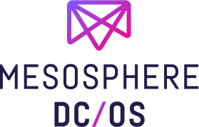

Cloud migration & infrastructure automation
-
Amazon Web Services (AWS)
-
Microsoft Azure
-

IBM Cloud
-

50+ others (public & private)
AWS is the most popular cloud provider. We fully support usage of AWS services, however have a preference for using EC2 nodes over there more managed services. Advantages: stack is portable between cloud providers; extensibility; and optimised data locality (especially useful for data analytics).
Azure—like Amazon and IBM—have a huge number of datacentres and features. Some of their significant internals are based on Mesosphere (you can see their CTO speaking here).
IBM's offering is particularly useful for data analytics workloads, as they don't charge for inter-node communication (including across datacentres).
OpenStack is just one of the >50 public and private cloud providers we support. Full list follows.
Automating infrastructure has been a focus of ours since 2009 with ControlTier. Nowadays we focus on: Fabric, Ansible, Puppet, Chef, Salt & etc.; with a concentration on: OS-specific packaging; Docker, and PaaS. Thereby removing the need for permanament DevOps engineers for anything smaller than large enterprise.
Using principles popularised by Heroku with 12-factor apps and Roy Fielding with REST, we re-engineer old stacks to be vertically scalable. Distributing degrees of failures, modularising to encourage independent evolvability, all enable more teams to join projects (collaborating without requiring discussion).
Grow from 1 server to 10,000+. Develop around DNS with health checks (such as Consul or Mesos DNS), so that your applications know when they're online, finished, or are at capacity (and can act accordingly).


docker docker
dcos dcos
EngagePeople EngagePeople
github github
MinistryVision MinistryVision